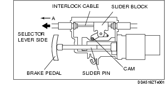
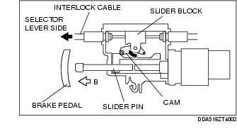

Shift-lock system operation
• The selector lever can be shifted from P position only when the following conditions are satisfied.
1. When the brake pedal is not depressed, the slider pin is pressed into the position shown below by the brake pedal. Thus the slider block is inhibited from moving in direction A via the cam. In this condition, the interlock cable and interlock cam are locked, and the guide pin on the shift lever does not move out of the position. Thus the select lever cannot be shifted to other than P position.

2. When the brake pedal is depressed, the slider pin moves freely in direction B. The slider block also starts to move freely. The interlock cable and interlock cam are not locked, thus shifting out of P position becomes possible.
